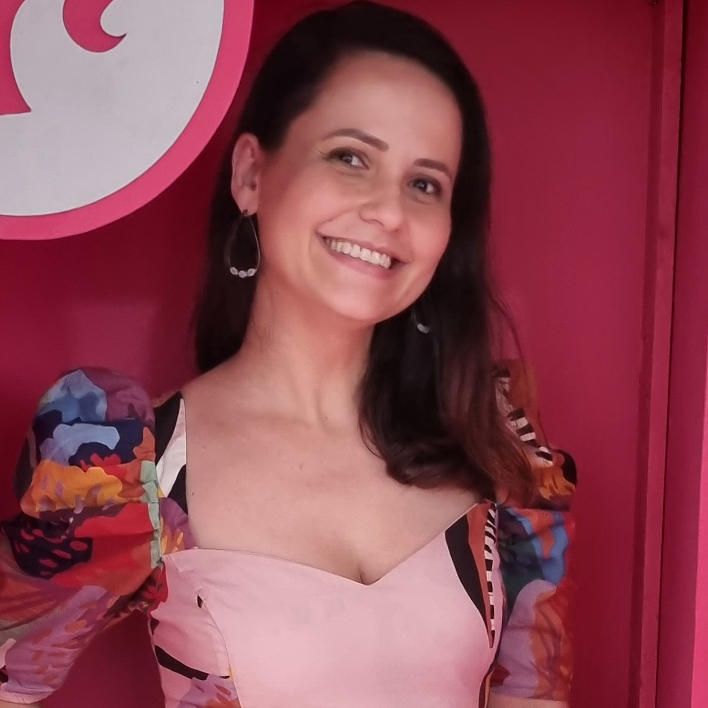

Angelica Vilarim Psicóloga

Acadêmico
Formada em Psicologia pela Universidade Estadual do Rio de Janeiro (2004-2008)
Especialização em Psicanálise e Saúde Mental pela Universidade Estadual do Rio de Janeiro (2010-2012)
Especialização em Saúde Pública pela Fundação Oswaldo Cruz (2014-2016)
Mestrado em Psicanálise pela Universidade Estadual do Rio de Janeiro (2020-2023)
Experiência
Viva Rio - Psicóloga na e-APP SMS/RJ (2022-2024)
Psicóloga no CAPS SMS/RJ (2016-2022)
Psicóloga no NASF SMS/RJ (2011-2016)
Psicóloga DEGASE (2009-2012)